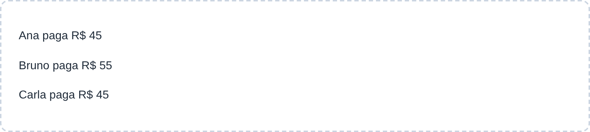

Vamos criar uma função que escreve na página, como um console.log que aparece na tela.
Crie a função mostrar(texto): ela cria um p, coloca o texto e adiciona na #saida.
Depois use a função comDesconto (já está pronta no 15.js) para mostrar na página:
Ana paga R$ 45 / Bruno paga R$ 55 / Carla paga R$ 45
Área da questão: é aqui que o seu código mexe

Escreva o código no arquivo 15.js. Salve, recarregue (F5) e confira a área e o console (F12, aba Console).